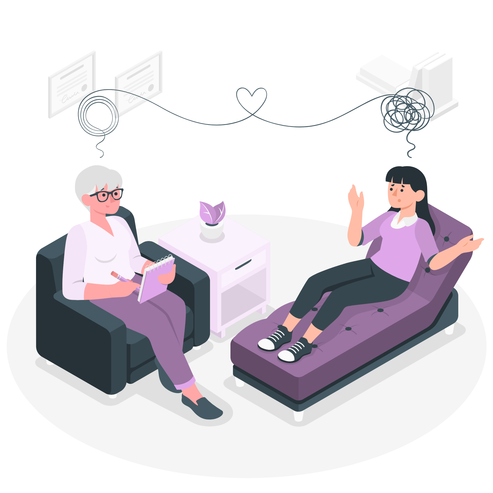

Conectamos pessoas que precisam de apoio emocional a voluntários dispostos a ajudar, criando uma rede de suporte acessível e confiável. Junte-se a nós e faça parte dessa corrente de cuidado.
Nossa plataforma conecta voluntários — psicólogos, terapeutas e grupos de apoio — a pessoas que buscam acolhimento emocional. O processo é simples: você navega pelos perfis dos voluntários, escolhe aquele que mais combina com suas necessidades e agenda um horário disponível. Para quem deseja contribuir, basta se inscrever como voluntário e disponibilizar sua experiência e tempo. Assim, criamos uma rede colaborativa que promove bem-estar e apoio mútuo.

O Projeto Acolher é uma iniciativa que oferece suporte emocional gratuito para pessoas em situação de vulnerabilidade, conectando-as com voluntários treinados para ouvir e ajudar.
A Rede de Apoio é uma plataforma colaborativa que conecta indivíduos que precisam de suporte emocional com voluntários dispostos a oferecer ajuda, promovendo bem-estar e solidariedade.
O Escuta Amiga é um serviço de apoio emocional onde voluntários treinados oferecem um espaço seguro para pessoas compartilharem suas preocupações e receberem orientação.